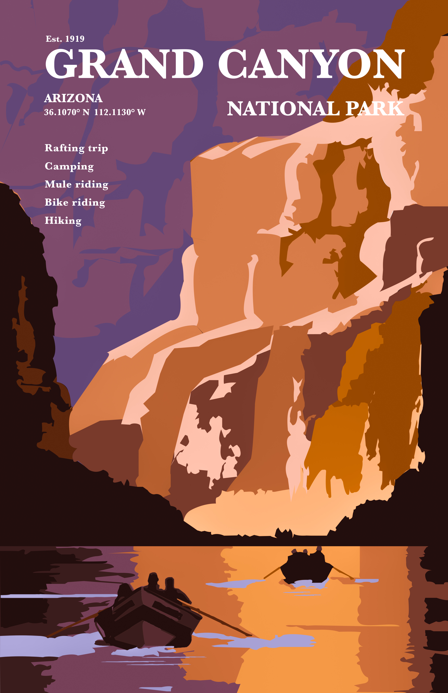

visit
GRAND CANYON
NATIONAL PARK
story
Grand Canyon is celebrated for its plunging depths; temple-like buttes; and vast, multihued, labyrinthine topography. Scenic wonders within park boundaries include high plateaus, plains, deserts, forests, cinder cones, lava flows, streams, waterfalls, and one of America’s great whitewater rivers.
An ecological refuge with relatively undisturbed remnants of dwindling ecosystems (such as boreal forest and desert riparian communities), and numerous endemic, rare or endangered plant and animal species.
numbers
-112.125092 W : the degree of longtitude
36.056595 N : the degree of latitude
1,902 mi² : the total square mileage
1919 : the established year
5 : things to do
Mule riding
Rafting trip
Hiking
Camping
Biking

sister parks
around
the corner